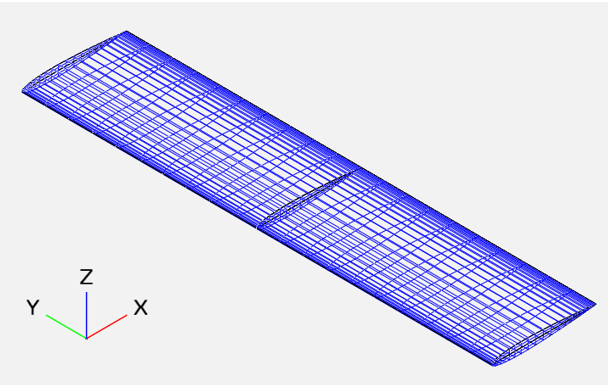

Aerodynamic Wing Optimization Design Problem
Contents
Aerodynamic Wing Optimization Design Problem#

Brief overview of the problem#
The aerodynamic wing optimization design problem involves optimizing the shape of a rectangular wing to minimize drag and achieve a specific lift coefficient. The problem uses an open-source software package called OpenMDAO to create a multi-disciplinary optimization framework that combines aerodynamics, structural mechanics, and geometric design.
The optimization problem takes as input several design parameters such as the chord and span of the wing, and the angle of attack, and uses an aerodynamic solver to compute the lift and drag coefficients of the wing at a specific flight condition. The solver is based on a Vortex Lattice Method (VLM) that approximates the aerodynamics of the wing using a discrete set of vortices.
The optimization algorithm then adjusts the design parameters to find the set of parameters that minimizes the drag of the wing while achieving a specific lift coefficient. The algorithm uses the SNOPT optimization solver to find the optimal solution.
The problem can be modified to explore different design objectives, such as optimizing for both lift and stability, or to include additional disciplines such as structural optimization or uncertainty quantification. The example provides a starting point for engineers and scientists to use open-source software and computational methods to optimize the design of a wing and improve its performance.
Tools used in this example#
This code example demonstrates the use of several tools commonly used in aerospace engineering design and analysis: OpenMDAO, OpenVSP, and VSPAero.
OpenMDAO is an open-source software framework for multidisciplinary design optimization (MDO) of complex systems. It provides a framework for building and solving optimization problems with a modular approach. It allows for the integration of different disciplines and optimization algorithms, making it a valuable tool for aerospace engineering design problems that often require the consideration of multiple disciplines.
OpenVSP is an open-source parametric aircraft geometry tool used to create 3D models of aircraft. It allows for the creation of complex geometry models and provides tools for analysis and optimization. OpenVSP was used in this example to create the geometry of a rectangular wing.
VSPAero is an aerodynamic analysis tool that works with OpenVSP to provide aerodynamic analysis and optimization capabilities. VSPAero uses the Vortex Lattice Method (VLM) to compute the aerodynamic forces and moments on the aircraft. In this example, VSPAero was used to perform an aerodynamic analysis of the rectangular wing created in OpenVSP. The analysis was performed for a specific flight condition defined by the angle of attack and wing area.
The use of these tools in this example demonstrates a typical workflow in aerospace engineering design and analysis. OpenVSP is used to create the aircraft geometry, which is then analyzed using VSPAero. OpenMDAO is used to integrate the aerodynamic analysis results into an optimization problem to find the optimal design of the aircraft under certain constraints. This workflow enables engineers to explore the design space and find optimal solutions that meet the given design requirements.
Run script and explanation#
This code block defines an OpenMDAO component called FlightCase, which sets up and solves an aerodynamic analysis problem using the vortex lattice method (VLM) for a given aircraft design, specified using OpenVSP.
The component first initializes the VLM assembler pyVSPAero with the provided VSP model file. The VLM assembler sets up the simulation and provides the necessary functions to compute aerodynamic coefficients CL and CD. These functions are added as outputs to the component.
In the setup method, the component sets up its inputs, which include the angle of attack aoa, reference area S_ref, and the initial aircraft geometry x_aero. It also sets up the outputs for the aerodynamic coefficients. Additionally, the component sets up the VLMAssembler object by creating a steady problem instance with the specified name and options.
The compute method of the component sets the flight variables and geometry using the inputs, solves the VLM problem, and evaluates the output functions to get the values of the aerodynamic coefficients. These coefficients are assigned to the component’s outputs.
The compute_partials method computes the partial derivatives of the output functions with respect to the input variables. These partial derivatives are used in the gradient-based optimization algorithm to find the optimal design.
import os
import openmdao.api as om
from pygeo.mphys import OM_DVGEOCOMP
import openvsp
from vspaero.pyvspaero import pyVSPAero
from vspaero import functions
class FlightCase(om.ExplicitComponent):
def initialize(self):
self.options.declare("vsp_file", recordable=False)
def setup(self):
# VSP model
vsp_file = self.options["vsp_file"]
VLMAssembler = pyVSPAero(vsp_file)
# Add output functions
VLMAssembler.add_function("CL", functions.CLi)
VLMAssembler.add_function("CD", functions.CDi)
self.assembler = VLMAssembler
# Create a steady problem instance
self.problem = VLMAssembler.create_steady_problem(self.name, options={"symmetry": "Y"})
mesh_xyz = self.problem.get_geometry()
self.add_input("aoa", val=5.0)
self.add_input("S_ref", val=10.0)
self.add_input("x_aero", val=mesh_xyz, shape=mesh_xyz.shape)
for out_name in self.problem.func_list:
self.add_output(out_name, val=1.0)
self.declare_partials("*", "*")
def get_mesh(self):
return self.problem.get_geometry()
def compute(self, inputs, outputs):
self.problem.set_flight_vars(**inputs)
self.problem.set_geometry(inputs["x_aero"])
self.problem.solve()
funcs = {}
self.problem.eval_functions(funcs)
for out_name in outputs:
output_key = f"{self.name}_{out_name}"
outputs[out_name] = funcs[output_key]
self.problem.write_solution(output_dir="./output")
def compute_partials(self, inputs, J):
""" Jacobian of partial derivatives."""
self.problem.set_flight_vars(**inputs)
self.problem.set_geometry(inputs["x_aero"])
funcs_sens = {}
self.problem.eval_functions_sens(funcs_sens)
for out_name in self.problem.func_list:
for in_name in inputs:
output_key = f"{self.name}_{out_name}"
if in_name == "x_aero":
J[out_name, in_name] = funcs_sens[output_key]["xyz"]
else:
J[out_name, in_name] = funcs_sens[output_key][in_name]
The Planform class is an ExplicitComponent that calculates the reference wing area (S_ref) of a VSP model. S_ref is the reference area used to calculate lift and drag forces. The class takes WingGeom parameters (root chord and tip chord for each section of the wing) as inputs and returns the reference area as output. The reference wing area is calculated using the openvsp package, which is used to read and write VSP files. The compute function takes the inputs dictionary containing the WingGeom parameters as inputs, updates the VSP model with the new values, calculates the reference area using GetParmVal function from openvsp, and sets the reference area as the output of the component.
class Planform(om.ExplicitComponent):
def initialize(self):
self.options.declare("vsp_file", recordable=False)
def setup(self):
# VSP model
vsp_file = self.options["vsp_file"]
self.add_input("WingGeom:XSec_1:Root_Chord", val=1)
self.add_input("WingGeom:XSec_2:Root_Chord", val=1)
self.add_input("WingGeom:XSec_3:Root_Chord", val=1)
self.add_input("WingGeom:XSec_4:Root_Chord", val=1)
self.add_input("WingGeom:XSec_4:Tip_Chord", val=1)
self.add_output("S_ref", val=1.0)
self.declare_partials("S_ref", "*", method="fd")
self.vsp_model = openvsp.VSPVehicle(vsp_file)
def compute(self, inputs, outputs):
for input_key in inputs:
val = inputs[input_key][0]
geom_name, group_name, parm_name = input_key.split(":")
container_id = self.vsp_model.FindContainer(geom_name, 0)
self.vsp_model.SetParmValUpdate(container_id, parm_name, group_name, val)
self.vsp_model.Update()
parm_id = self.vsp_model.FindParm(container_id, "TotalArea", geom_name)
outputs["S_ref"] = self.vsp_model.GetParmVal(parm_id)
Top is an om.Group object that is used to collect and manage several components of the optimization problem.
The setup method of Top is used to set up the optimization problem. It adds several subsystems to the problem:
An initial_mesh subsystem that initializes the mesh. A geometry subsystem that adds geometry to the problem. A planform subsystem that calculates the planform. A cruise subsystem that calculates the cruise performance. The initial_mesh and geometry subsystems set up the geometry of the problem using OM_DVGEOCOMP and a vsp_file. geometry adds a pointset to the geometry called “aero” that will be used in the cruise analysis.
The planform subsystem calculates the planform of the problem. It sets up design variables for the root and tip chord lengths for each of the four wing sections, and computes the wing reference area.
The cruise subsystem calculates the performance of the wing in cruise mode using FlightCase which sets up the VLM model and computes the CL and CD.
The optimization problem is then set up by creating an instance of om.Problem(), adding the Top() group to the problem, setting up the driver as om.pyOptSparseDriver, and adding the design variables, constraints, and objective.
The problem is then run by calling prob.run_driver() and the results are printed.
class Top(om.Group):
def setup(self):
# Setup VLM assembler
vsp_file = "rect_wing.vsp3"
cruise_component = FlightCase(vsp_file=vsp_file)
self.add_subsystem("initial_mesh", om.IndepVarComp())
# add the geometry component, we dont need a builder because we do it here.
self.add_subsystem("geometry", OM_DVGEOCOMP(file=vsp_file, type="vsp"), promotes_inputs=["WingGeom*"])
# add pointset
self.geometry.nom_add_discipline_coords("aero")
self.add_subsystem("planform", Planform(vsp_file=vsp_file), promotes_inputs=['*'])
self.connect("planform.S_ref", "cruise.S_ref")
self.add_subsystem("cruise", cruise_component)
self.connect("geometry.x_aero0", "cruise.x_aero")
def configure(self):
self.initial_mesh.add_output("x_aero0", self.cruise.get_mesh())
self.connect("initial_mesh.x_aero0", "geometry.x_aero_in")
# create geometric DV setup
self.geometry.nom_addVSPVariable("WingGeom", "XSec_1", "Root_Chord", scaledStep=False)
self.geometry.nom_addVSPVariable("WingGeom", "XSec_2", "Root_Chord", scaledStep=False)
self.geometry.nom_addVSPVariable("WingGeom", "XSec_3", "Root_Chord", scaledStep=False)
self.geometry.nom_addVSPVariable("WingGeom", "XSec_4", "Root_Chord", scaledStep=False)
self.geometry.nom_addVSPVariable("WingGeom", "XSec_4", "Tip_Chord", scaledStep=False)
prob = om.Problem()
prob.model = Top()
# Set optimizer as model driver
prob.driver = om.pyOptSparseDriver(debug_print=['objs', 'nl_cons', "desvars"])
prob.driver.options['optimizer'] = "SNOPT"
prob.driver.opt_settings['Major iterations limit'] = 200
prob.driver.opt_settings["Nonderivative linesearch"] = None
prob.driver.opt_settings["Major optimality tolerance"] = 1e-4
prob.driver.opt_settings["Major feasibility tolerance"] = 1e-5
prob.driver.opt_settings["Hessian updates"] = 10
# Setup problem and add design variables, constraint, and objective
prob.model.add_design_var("WingGeom:XSec_1:Root_Chord", lower=1e-3, upper=5.0)
prob.model.add_design_var("WingGeom:XSec_2:Root_Chord", lower=1e-3, upper=5.0)
prob.model.add_design_var("WingGeom:XSec_3:Root_Chord", lower=1e-3, upper=5.0)
prob.model.add_design_var("WingGeom:XSec_4:Root_Chord", lower=1e-3, upper=5.0)
prob.model.add_design_var("WingGeom:XSec_4:Tip_Chord", lower=1e-3, upper=5.0)
prob.model.add_design_var("cruise.aoa", lower=-10.0, upper=10.0)
prob.model.add_constraint("cruise.CL", equals=0.5)
prob.model.add_constraint("planform.S_ref", equals=10.0, scaler=0.1)
prob.model.add_objective("cruise.CD", scaler=1e4)
prob.setup()
prob.run_model()
print("CL", prob["cruise.CL"][0])
print("CD", prob["cruise.CD"][0])
prob.run_driver()
Initializing DVGeometryVSP
Loading the vsp model took: 0.025979995727539062
Building a quad mesh for fast projections.
Initialized DVGeometry VSP in 0.030251502990722656 seconds.
DVGeometryVSP note:
Adding pointset x_aero0 took 0.003663778305053711 seconds.
Maximum distance between the added points and the VSP geometry is 3.731756137924373e-12
CL 0.4299103947134961
CD 0.005992091473352067
Driver debug print for iter coord: rank0:pyOptSparse_SNOPT|0
------------------------------------------------------------
Design Vars
{'WingGeom:XSec_1:Root_Chord': array([1.]),
'WingGeom:XSec_2:Root_Chord': array([1.]),
'WingGeom:XSec_3:Root_Chord': array([1.]),
'WingGeom:XSec_4:Root_Chord': array([1.]),
'WingGeom:XSec_4:Tip_Chord': array([1.]),
'cruise.aoa': array([5.])}
Nonlinear constraints
{'cruise.CL': array([0.42991039]), 'planform.S_ref': array([10.])}
Objectives
{'cruise.CD': array([0.00599209])}
FD jacobian calcs with dvgeovsp took 0.1570589542388916 seconds in total
updating the vsp model took 0.11221575736999512 seconds
evaluating the new points took 0.0030431747436523438 seconds
communication took 0.00026035308837890625 seconds
Driver debug print for iter coord: rank0:pyOptSparse_SNOPT|1
------------------------------------------------------------
Design Vars
{'WingGeom:XSec_1:Root_Chord': array([1.000001]),
'WingGeom:XSec_2:Root_Chord': array([0.999999]),
'WingGeom:XSec_3:Root_Chord': array([1.000001]),
'WingGeom:XSec_4:Root_Chord': array([0.999999]),
'WingGeom:XSec_4:Tip_Chord': array([1.000001]),
'cruise.aoa': array([4.999999])}
Nonlinear constraints
{'cruise.CL': array([0.42991031]), 'planform.S_ref': array([10.])}
Objectives
{'cruise.CD': array([0.00599209])}
Driver debug print for iter coord: rank0:pyOptSparse_SNOPT|2
------------------------------------------------------------
Design Vars
{'WingGeom:XSec_1:Root_Chord': array([1.1923384]),
'WingGeom:XSec_2:Root_Chord': array([1.33584493]),
'WingGeom:XSec_3:Root_Chord': array([1.05943977]),
'WingGeom:XSec_4:Root_Chord': array([0.62993406]),
'WingGeom:XSec_4:Tip_Chord': array([0.7572241]),
'cruise.aoa': array([5.58510832])}
Nonlinear constraints
{'cruise.CL': array([0.48846365]), 'planform.S_ref': array([10.])}
Objectives
{'cruise.CD': array([0.00755966])}
FD jacobian calcs with dvgeovsp took 0.2277379035949707 seconds in total
updating the vsp model took 0.18096256256103516 seconds
evaluating the new points took 0.0029103755950927734 seconds
communication took 0.0002155303955078125 seconds
Driver debug print for iter coord: rank0:pyOptSparse_SNOPT|3
------------------------------------------------------------
Design Vars
{'WingGeom:XSec_1:Root_Chord': array([0.89473097]),
'WingGeom:XSec_2:Root_Chord': array([0.76437145]),
'WingGeom:XSec_3:Root_Chord': array([1.25764842]),
'WingGeom:XSec_4:Root_Chord': array([1.21193095]),
'WingGeom:XSec_4:Tip_Chord': array([0.63736741]),
'cruise.aoa': array([5.49025158])}
Nonlinear constraints
{'cruise.CL': array([0.4660347]), 'planform.S_ref': array([10.])}
Objectives
{'cruise.CD': array([0.00736325])}
Driver debug print for iter coord: rank0:pyOptSparse_SNOPT|4
------------------------------------------------------------
Design Vars
{'WingGeom:XSec_1:Root_Chord': array([1.08683471]),
'WingGeom:XSec_2:Root_Chord': array([1.133254]),
'WingGeom:XSec_3:Root_Chord': array([1.12970597]),
'WingGeom:XSec_4:Root_Chord': array([0.83625559]),
'WingGeom:XSec_4:Tip_Chord': array([0.71473415]),
'cruise.aoa': array([5.55148102])}
Nonlinear constraints
{'cruise.CL': array([0.48818426]), 'planform.S_ref': array([10.])}
Objectives
{'cruise.CD': array([0.00750284])}
FD jacobian calcs with dvgeovsp took 0.23507070541381836 seconds in total
updating the vsp model took 0.1878817081451416 seconds
evaluating the new points took 0.002986431121826172 seconds
communication took 0.0002474784851074219 seconds
Driver debug print for iter coord: rank0:pyOptSparse_SNOPT|5
------------------------------------------------------------
Design Vars
{'WingGeom:XSec_1:Root_Chord': array([1.14009194]),
'WingGeom:XSec_2:Root_Chord': array([1.1842854]),
'WingGeom:XSec_3:Root_Chord': array([1.13326328]),
'WingGeom:XSec_4:Root_Chord': array([0.78303945]),
'WingGeom:XSec_4:Tip_Chord': array([0.6587318]),
'cruise.aoa': array([5.66413494])}
Nonlinear constraints
{'cruise.CL': array([0.48818426]), 'planform.S_ref': array([10.])}
Objectives
{'cruise.CD': array([0.00750284])}
capi_return is NULL
Call-back cb_userfg_in_snoptc__user__routines failed.
---------------------------------------------------------------------------
KeyboardInterrupt Traceback (most recent call last)
Cell In[3], line 62
59 print("CL", prob["cruise.CL"][0])
60 print("CD", prob["cruise.CD"][0])
---> 62 prob.run_driver()
File /mnt/c/Users/John/Dropbox/git/openmdao/openmdao/utils/hooks.py:131, in _hook_decorator.<locals>.execute_hooks(*args, **kwargs)
129 def execute_hooks(*args, **kwargs):
130 _run_hooks(pre_hooks, inst)
--> 131 ret = f(*args, **kwargs)
132 _run_hooks(post_hooks, inst)
133 return ret
File /mnt/c/Users/John/Dropbox/git/openmdao/openmdao/core/problem.py:680, in Problem.run_driver(self, case_prefix, reset_iter_counts)
677 self.model._clear_iprint()
679 with SaveOptResult(self.driver):
--> 680 return self.driver.run()
681 finally:
682 self._recording_iter.prefix = old_prefix
File /mnt/c/Users/John/Dropbox/git/openmdao/openmdao/drivers/pyoptsparse_driver.py:551, in pyOptSparseDriver.run(self)
547 self._exc_info = (Exception, Exception(msg), None)
548 else:
549
550 # Use OpenMDAO's differentiator for the gradient
--> 551 sol = opt(opt_prob, sens=WeakMethodWrapper(self, '_gradfunc'),
552 storeHistory=self.hist_file, hotStart=self.hotstart_file)
554 except Exception as c:
555 if not self._exc_info:
File ~/anaconda3/envs/dev/lib/python3.8/site-packages/pyoptsparse/pySNOPT/pySNOPT.py:486, in SNOPT.__call__(self, optProb, sens, sensStep, sensMode, storeHistory, hotStart, storeSens, timeLimit, restartDict)
484 timeA = time.time()
485 # fmt: off
--> 486 hs, xs, pi, rc, inform, mincw, miniw, minrw, nS, ninf, sinf, obj = snopt.snkerc(
487 start, nnCon, nnObj, nnJac, iObj, ObjAdd, ProbNm,
488 self._userfg_wrap, snopt.snlog, snopt.snlog2, snopt.sqlog, self._snstop,
489 Acol, indA, locA, bl, bu, Names, hs, xs, pi, cu, iu, ru, cw, iw, rw,
490 )
491 # fmt: on
492 optTime = time.time() - timeA
File ~/anaconda3/envs/dev/lib/python3.8/site-packages/pyoptsparse/pySNOPT/pySNOPT.py:559, in SNOPT._userfg_wrap(self, mode, nnJac, x, fobj, gobj, fcon, gcon, nState, cu, iu, ru)
557 fail = 0
558 if mode == 0 or mode == 2:
--> 559 fobj, fcon, fail = self._masterFunc(x, ["fobj", "fcon"])
560 if fail == 0:
561 if mode == 1:
File ~/anaconda3/envs/dev/lib/python3.8/site-packages/pyoptsparse/pyOpt_optimizer.py:321, in Optimizer._masterFunc(self, x, evaluate)
318 # Now broadcast out the required arguments:
319 self.optProb.comm.bcast(args)
--> 321 result = self._masterFunc2(*args)
322 self.interfaceTime += time.time() - timeA
323 return result
File ~/anaconda3/envs/dev/lib/python3.8/site-packages/pyoptsparse/pyOpt_optimizer.py:355, in Optimizer._masterFunc2(self, x, evaluate, writeHist)
350 if not np.isclose(x, self.cache["x"], atol=EPS, rtol=EPS).all() or "funcs" not in self.cache:
351 # The previous evaluated point is different than the point requested
352 # OR this is a recursive call to _masterFunc2 from a gradient evaluation that occured
353 # at the beginning of a hot started optimization
354 timeA = time.time()
--> 355 args = self.optProb.objFun(xuser)
356 if isinstance(args, tuple):
357 funcs = args[0]
File /mnt/c/Users/John/Dropbox/git/openmdao/openmdao/utils/class_util.py:82, in WeakMethodWrapper.__call__(self, *args, **kwargs)
66 def __call__(self, *args, **kwargs):
67 """
68 Call the named method on the object.
69
(...)
80 The return value of the wrapped method called with the given args.
81 """
---> 82 return getattr(self._ref(), self.__name__)(*args, **kwargs)
File /mnt/c/Users/John/Dropbox/git/openmdao/openmdao/drivers/pyoptsparse_driver.py:659, in pyOptSparseDriver._objfunc(self, dv_dict)
657 try:
658 self._in_user_function = True
--> 659 model.run_solve_nonlinear()
661 # Let the optimizer try to handle the error
662 except AnalysisError:
File /mnt/c/Users/John/Dropbox/git/openmdao/openmdao/core/system.py:4696, in System.run_solve_nonlinear(self)
4690 """
4691 Compute outputs.
4692
4693 This calls _solve_nonlinear, but with the model assumed to be in an unscaled state.
4694 """
4695 with self._scaled_context_all():
-> 4696 self._solve_nonlinear()
File /mnt/c/Users/John/Dropbox/git/openmdao/openmdao/core/group.py:2532, in Group._solve_nonlinear(self)
2529 name = self.pathname if self.pathname else 'root'
2531 with Recording(name + '._solve_nonlinear', self.iter_count, self):
-> 2532 self._nonlinear_solver._solve_with_cache_check()
File /mnt/c/Users/John/Dropbox/git/openmdao/openmdao/solvers/nonlinear/nonlinear_runonce.py:26, in NonlinearRunOnce._solve_with_cache_check(self)
25 def _solve_with_cache_check(self):
---> 26 self.solve()
File /mnt/c/Users/John/Dropbox/git/openmdao/openmdao/solvers/nonlinear/nonlinear_runonce.py:45, in NonlinearRunOnce.solve(self)
41 subsys._solve_nonlinear()
43 # If this is not a parallel group, transfer for each subsystem just prior to running it.
44 else:
---> 45 self._gs_iter()
47 rec.abs = 0.0
48 rec.rel = 0.0
File /mnt/c/Users/John/Dropbox/git/openmdao/openmdao/solvers/solver.py:800, in NonlinearSolver._gs_iter(self)
798 if subsys._is_local:
799 try:
--> 800 subsys._solve_nonlinear()
801 except AnalysisError as err:
802 if 'reraise_child_analysiserror' not in self.options or \
803 self.options['reraise_child_analysiserror']:
File /mnt/c/Users/John/Dropbox/git/openmdao/openmdao/core/explicitcomponent.py:312, in ExplicitComponent._solve_nonlinear(self)
310 with self._unscaled_context(outputs=[self._outputs], residuals=[self._residuals]):
311 self._residuals.set_val(0.0)
--> 312 self._compute_wrapper()
File /mnt/c/Users/John/Dropbox/git/openmdao/openmdao/core/explicitcomponent.py:286, in ExplicitComponent._compute_wrapper(self)
283 self.compute(self._inputs, self._outputs,
284 self._discrete_inputs, self._discrete_outputs)
285 else:
--> 286 self.compute(self._inputs, self._outputs)
Cell In[1], line 44, in FlightCase.compute(self, inputs, outputs)
41 self.problem.set_flight_vars(**inputs)
42 self.problem.set_geometry(inputs["x_aero"])
---> 44 self.problem.solve()
46 funcs = {}
47 self.problem.eval_functions(funcs)
File /mnt/c/Users/John/Dropbox/git/VSPAERO/vspaero/problems/base.py:283, in BaseProblem.solve(self)
282 def solve(self):
--> 283 self.assembler.solve_forward()
284 self.call_counter += 1
KeyboardInterrupt: